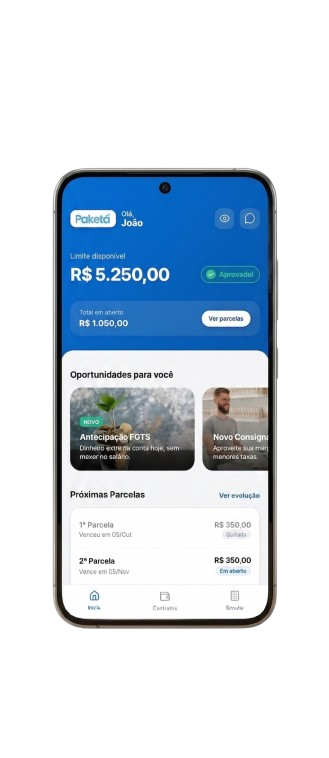
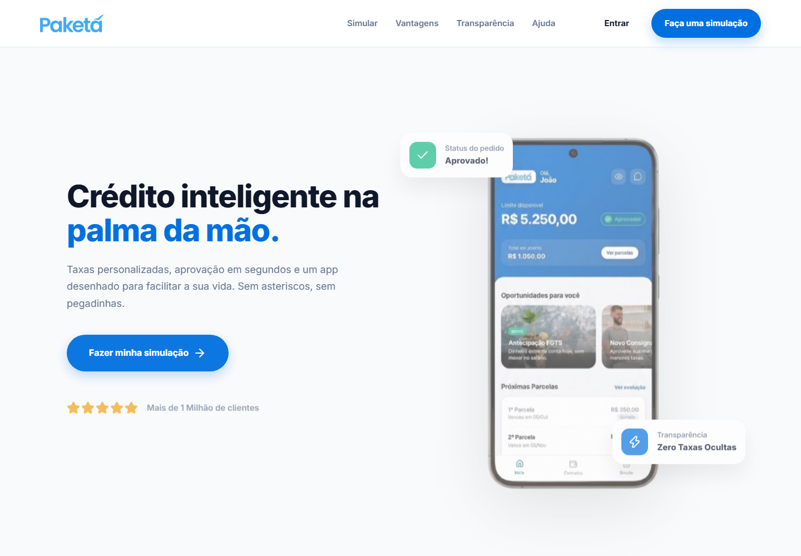
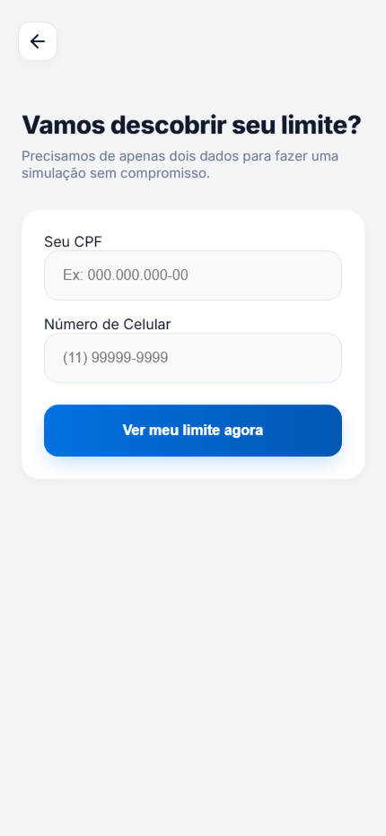
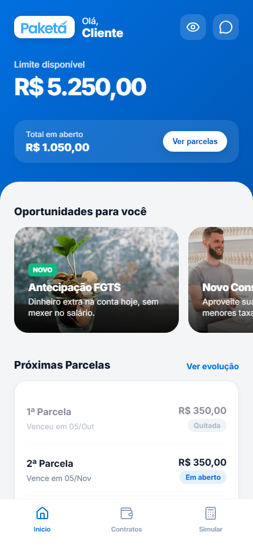
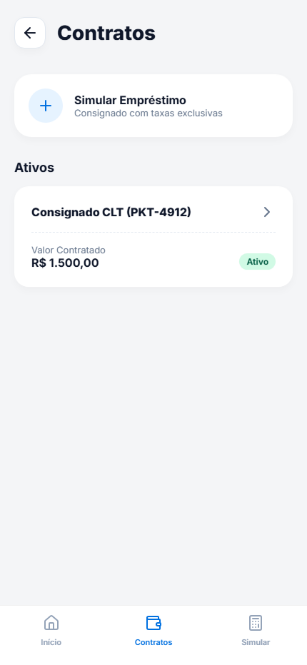
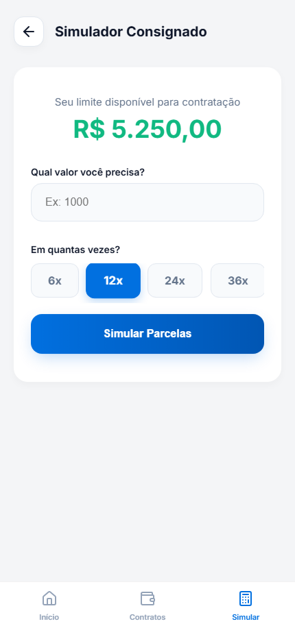

Confiança
Links externos não construíam a mesma percepção de segurança de um ambiente proprietário.
Case study · Produto financeiro / UX
Um estudo de produto para substituir uma jornada fragmentada por um WebApp que reúne acesso, simulação, contratos, parcelas, ofertas e atendimento em um ambiente reconhecível e consistente.

O contexto
A jornada dependia de links enviados por SMS. Além de fragmentar o acesso, esse modelo podia aumentar a insegurança no momento de compartilhar dados e deixava o cliente sem um ponto central para acompanhar dívida, parcelas ou solicitações depois da contratação.
Links externos não construíam a mesma percepção de segurança de um ambiente proprietário.
Saldo, parcelas e evolução da dívida não estavam reunidos em uma visão acessível.
Dúvidas do pós-venda dependiam de outros canais, interrompendo a experiência.
Hipótese de produto
E se a contratação de crédito fosse o início de uma relação contínua com o cliente?
Diagnóstico estratégico
O benchmark comparou o modelo baseado em links com experiências concorrentes que já ofereciam ambiente logado, transparência e autoatendimento. O principal gap estava no ponto de contato: faltava um canal capaz de sustentar confiança, autonomia e relacionamento.
Experiência fragmentada
Direção proposta
Visão da solução
A landing page apresenta a proposta e conduz à simulação; o ambiente logado mantém a relação depois que o crédito é contratado.

Decisões de produto
Para novos usuários, CPF e celular iniciam a avaliação antes da coleta de dados complementares. Para clientes existentes, CPF, token por SMS e criação de senha estruturam o primeiro acesso.
O protótipo contempla caminhos de aprovação e recusa. A interface precisa comunicar cada resultado com clareza e oferecer uma saída coerente, sem esconder a lógica da operação.
A consulta de margem via Gov.br aparece como etapa necessária para construir uma simulação aderente ao contexto do usuário, evitando solicitar consentimento sem propósito visível.
Experiência da jornada
Explore como a experiência conduz o usuário por etapas progressivas. Cada tela responde a uma dúvida específica antes de solicitar o próximo compromisso.
Etapa 01 de 06
CPF e celular iniciam a jornada para que o usuário conheça seu potencial antes de preencher um cadastro extenso.

Dashboard
Limite disponível, total em aberto, próximas parcelas e oportunidades ocupam uma única visão. O objetivo é reduzir a necessidade de procurar informações financeiras em canais paralelos.

Autonomia
O produto conecta duas necessidades recorrentes: entender o contrato atual e avaliar uma nova contratação.


Arquitetura da jornada
Entrar ou criar o primeiro acesso.
Validar margem antes de avançar.
Comparar valor, parcelas, taxa e CET.
Consultar saldo, contratos e parcelas.
Acessar informações e atendimento.
Conhecer ofertas adequadas ao contexto.
Priorização e roadmap
O backlog foi organizado por impacto e dependência. O MVP valida o núcleo operacional; as fases seguintes adicionam retenção, autonomia e crescimento.
Onboarding, autorização, dashboard básico, simulação, contratação e histórico.
Atendimento, evolução da dívida, antecipação de parcelas e documentos.
Enriquecimento de perfil, indicação e portabilidade.
Medição proposta
O material define indicadores para uma futura validação. Eles não representam resultados já alcançados.
Aprendizados
Projetar o WebApp exigiu conectar confiança percebida, regras de crédito, dependências de autorização, necessidades de pós-venda e oportunidades de negócio. O aprendizado central foi tratar a contratação como parte de um sistema maior: uma relação que precisa continuar clara depois que o dinheiro chega.
Vamos construir o próximo projeto
Posso ajudar a transformar contexto, regras e necessidades de negócio em uma experiência mais clara e consistente.